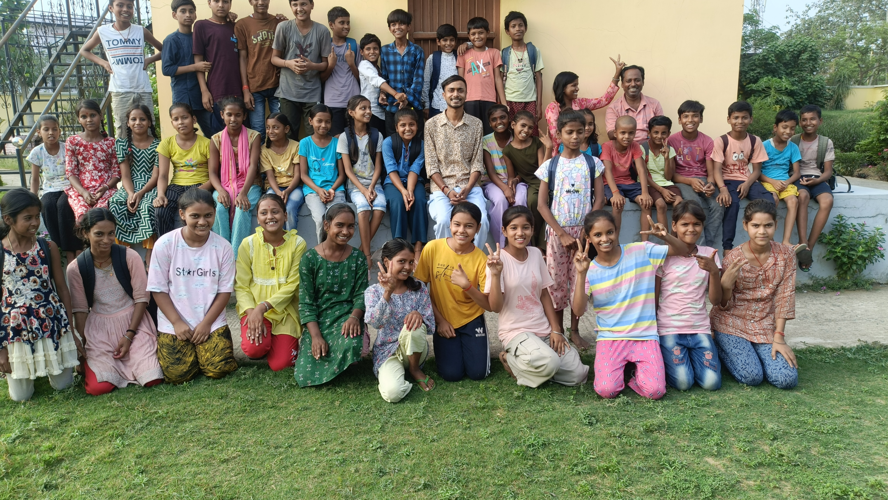
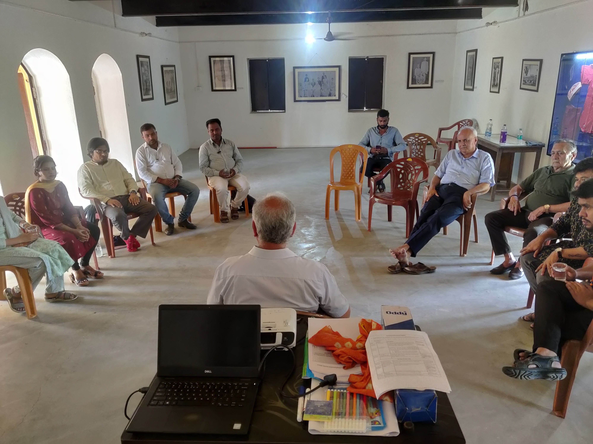
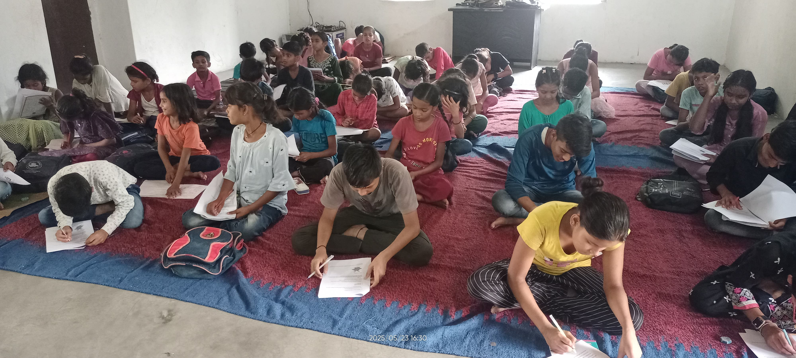
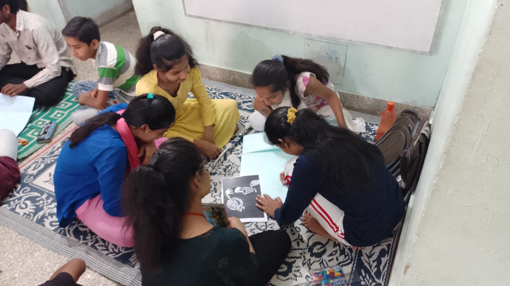

Hindi, English, mathematics and science
Children work in age-based groups, moving from foundational reading and number sense to fractions, algebra, communication and everyday science.
Sitaram Ashram · Bihta
Inside the Ashram, children come after school to read, solve problems, use technology, make things, perform and take part in Bal Sansad.
The Swami Sahajanand Saraswati KHEL Shikshan Kendra opened in May 2022. It carries forward the Ashram’s public-service legacy through a child-friendly space for academic, social-emotional and creative learning.
See what happens here

The Ashram and the centre
Sitaram Ashram is associated with Swami Sahajanand Saraswati’s work with farmers, education and Ayurveda. KHEL adds another chapter to that history.
Children learn in rooms that also hold the memory of public meetings and collective action. The green campus and mango orchard make space for outdoor activities, play and summer programmes.
Ruban Memorial Hospital’s CSR programme has supported KHEL Bihta since the centre opened in May 2022. An Ayurvedic clinic at the Ashram also supports children and nearby families.
What children do here
The original pillars—Life Skills & ICT, Numeracy & Literacy and Civic Education—remain visible in a programme that now also includes social-emotional learning, STEAM and the arts.
Children work in age-based groups, moving from foundational reading and number sense to fractions, algebra, communication and everyday science.
Digital practice lets children work at their own pace. Educators use the results to see where more explanation or practice is needed.
Sessions make room for attention, relationships, emotional awareness and the decisions adolescents face in school, family and community life.
Children build models, explore simple machines, paint, sing, dance and perform—using many ways to understand and express an idea.
Children elect representatives, raise concerns and share work with families. Participation is part of how the centre runs.

Informal school outreach
Educators stay connected with children through informal coordination with nearby government schools, home visits, parent meetings and community events. This helps the team understand attendance, learning and family circumstances together.
How the outreach works
The team communicates with nearby government schools when it helps support a child’s learning or continuity. Because these arrangements are informal, individual schools are not named publicly.
How the centre developed
KHEL Bihta began with academics, life skills and digital learning. Educators have added new activities as children, families and schools have shown what matters locally.
May 2022
Learning groups begin at Sitaram Ashram. The first year brings academic sessions, computers, health camps, Bal Sansad and an Open House.
2023–2024
SEE Learning, arts, youth activities, computer practice and regular school and community visits become part of the centre’s rhythm.
2025 onwards
Informal school outreach, summer camps, STEAM, cultural visits and meals connect classroom learning with wellbeing and wider experience.
The method remains simple: know children over time, pay attention to what changes, and adapt the programme without losing continuity.

Children’s participation
Peer groups, Bal Sansad and Open House make room for children to explain, question, organise and listen.
Older children can support younger learners; representatives can raise concerns; and families can respond to work presented by children themselves. These are not activities added after learning. They are part of learning.
Educators also visit homes and meet parents, keeping each child’s progress connected to the relationships around them.
Support KHEL Bihta
Support helps sustain educators, learning materials, meals, digital access, creative work and the time needed to stay connected with children and families.